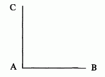

Беседа 2445 от 3877 · Беинса Дуно
Трите връзки
5 ч.
Добрата молитва
Песента "Аз смея да кажа"
Ще прочета 5 глава от Посланието към Римляните (стихове 1 – 8).
Когато човек яде, расте и е здрав, това е естествено положение. Понякога човек постоянно яде, но е недоволен от яденето - постоянно има болести. Как ще обясните това? И в единия, и в другия случай яде, обаче, в единия случай е доволен от яденето, а в другия случай не е доволен, и след като се наяде, все ще се оплаква от някоя болка.
Да кажем, вие сте верующ. На какво се дължи вашата вяра? Вярата се поддържа от чувствата. Но понякога, хората бъркат чувството с вярата. Гледам, даже някои велики автори, как са объркали известни понятия. Един автор влага хубавото, красивото като емоция в човека. Те са психологически термини. Думата "емоция" не може да се преведе; за да се преведе, нужни са две думи. Има думи, които не могат да се преведат.
Когато ви се говори за Бога, вие мислите, че можете да си Го представите като човешко същество. Погрешката не е там, но щом му дадете човешка форма, вие вече допускате в ума си някои човешки качества в Него. Щом допуснете, че Бог прилича, по някакъв начин, на човека, вие ще Му припишете някои качества, които самите вие имате – някои ваши склонности, разположения. Питам: Това приписване право ли е? Не е право! Например – като си представиш светлината, можеш ли да й припишеш едно качество, което ти имаш? Как би си представил светлината, че се гневи? Как ще представиш това? Гневът нещо съществено ли е в човека? Писанието казва: "Гневете се, но не съгрешавайте." Или подозираш, съмняваш се и пр. – това са чувства, които помрачават човешкия ум. Защо гневът е лош? Защото е чувство, което помрачава. Всички тия отрицателни качества помрачават ума ти и ти няма да имаш ясна представа за нещата. Най-после, свикнеш и казваш: "То така е определено!" И питаш: "Защо Господ направи така света?" Дайте си една ясна представа. Когато вие си варите кафе, Господ ли ви научи на това? Кой ви научи да го варите? То е ваше изобретение. Вие мислите, мислите и казвате: "Да създадем и ние нещо като Господа." Взимате вода, слагате кафе, сварявате го и водата почернява. "Защо Господ почерни водата?" Водата я почернихте вие. И ако постоянно пиете кафе, какво ще добиете? В краен случай, кафето може да ви лекува от треска някой път, но да ви даде сила, здраве – то е въпрос. Или пък, може да сръбвате малко ракийца. Сега хората проповядват въздържанието, нали? Но трябва да се започне от друго място. Вие и до сега още не можете да се освободите от много такива навици. Че вашият прогрес от какво зависи? Вие казвате: "Както Господ е направил нещата." Тогава ние трябва да напуснем човешките работи, вметнати в Божествения живот. Ние трябва да се освободим от животинското. Кое е животинското? Когато искаш да направиш нещо, но не му мислиш, това са животински състояния.
Всички хора очакват, че все ще дойде време, когато светът ще се оправи. И туряте оправянето на света вън от вас. И изключвате себе си от света. И казвате, че светът ще се оправи и хората ще станат по-добри. Какви ви са данните, че хората ще станат по-добри? На какво основание казвате, че светът ще се оправи? Ще ви приведа сега един много прост пример. Нали казвате: "Трябва да оправим този свят, трябва да го наредим." Много добре! Представете си, че един стар българин има три снахи: едната е на 40 години, другата е на 30, а най-младата е на 20 години. Дойде най-възрастната вкъщи и подреди всичко: тигани, чинии – всичко измие, измаже къщата, нареди, постели. Замине си. Дойде втората снаха, погледне и казва: "Не са хубаво наредени." И ги прережда. И тя измазва, и тя подрежда къщата. Най-после, дойде третата снаха. Тя като погледне, не харесва каквото са направили първата и втората снахи, и тя измазва и прережда. И казва: "Аз уредих къщата." Права ли е? В какво се състои тяхното уреждане? В пререждането на тиганите и чиниите, от едно място на друго. Туй е, което хората постоянно вършат. Например – какво е морал? Моралът – това са наредените тенджери и тигани на полицата. И някой ще дойде и ще тури една паница от тук там. Някой ще дойде и ще чете морал: къде да турим една паница – тук или там. И казва: "Уредихме света." Вие искате да бъдете морални. Какво разбирате под думата "морал"! Казвате: "Човек трябва да бъде нравствен." В какво седи нравствеността? Казвате: "Трябва да постъпваме право." Но, за да постъпваш право, ти трябва да мислиш! Трябва да имаш една мярка, с която да мериш нещата. Нравствеността – това е един път, по който човешката душа възлиза към Бога. Той е път не във време и пространство. Нравствеността не се намира тук, на Земята. Ти, ако мислиш да станеш добър и тогава да отидеш при Бога, твоята работа е свършена. Съвършенството не е да станеш добър. Господ не се нуждае от добри хора. Защото, доброто е само едно условие за съвършенството. Целта на живота е – да бъдеш съвършен. Ти, като се усъвършенстваш, ще отидеш при Бога, а не като си добър. Доброто е условие за съвършенството.
Някой иска да направи услуга някому и казва: "Да стана по-добър, по-чист." За чистота трябва да отидеш при някоя голяма река. От само себе си, как ще станеш чист? Как ще станеш добър, от само себе си? Чудни са някои хора!
Доброто е път, по който ние отиваме при Бога. Като отидем при Бога, нашата душа се възвишава и тогава, в своите мисли, чувства, постъпки, в своята обхода ние ставаме добри. Като не проявяваш доброто отвън, ти и отвътре не си добър. Да направя мисълта си малко по-ясна. Ние мислим някой път за доброто и казваме: "Говори ми истината!" Истината не може да се говори. Казваш: "Това, което ми говориш, истина ли е? Право ли говориш?" Добре, представете си, че в една бурна, мрачна нощ сте изгубили пътя. Излиза един човек със свещ пред вас и ви показва пътя. А вие го питате: "Ти светиш ли ми?" Може ли да питаш: "Това, което свети, ще ме заведе ли до местоназначението?" Може ли да зададеш такъв въпрос, когато гори свещта? Това е Истината! Няма какво да питаш! Щом тази светлина ти помага да виждаш по пътя, няма какво да питаш – гори ли свещта. Ако виждаш, ако можеш да вървиш – гори, ако не можеш да вървиш – не гори. Ако ме пита някой така, той или е сляп, или моята свещ не гори – нищо повече!
Вие питате: "Какво нещо е Истината?" Казват някой път, че Истината е цел. Но Истината е един безконечен път, по който душата върви и отива към Бога. Това е Истината. Христос казва: "Аз съм Пътят, Истината и Животът." Тия три неща не се намират тук, на Земята. Не мислете, че ще ги намерите в някои хора. Никъде няма да ги намерите. Животът се проявява в човека. Пътят, Истината и Животът се проявяват в човека, но живота никъде не можете да го хванете и да кажете: "Това е животът." Учените дават определение за него, но животът не е нещо, което може да се хване. Вие, като ядете хляб, искате да хванете живота. Не, вие само придобивате условия за живота. Как ще разберете тогава думите на Христа: "Това е живот вечен – да позная Тебе Единаго, Истиннаго Бога"? Ти казваш, че като ядеш хляб, добиваш живот, обаче Христос казва, че като познаеш Бога ще добиеш вечния живот. Но понятието "вечен живот" е една много отвлечена идея. Животът е едно благо и там, дето се явява страданието, това показва едно лишение. Всяко едно страдание в живота е признак за лишение от живот. Страдаш – лишаваш се от живот. Страданието е лишение от живот, а радостта е придобивка на живот. Следователно, радваме се, когато придобиваме, каквато и да е малка част от живота, а пък когато изгубим нещо, скърбим. Ти скърбиш за детето, което е умряло; скърбиш или се безпокоиш, че детето може да умре; после, можеш да скърбиш за въображаеми неща. Откраднали са ти пари – пак скърбиш. Защо? Защото тези пари щяха да подобрят живота ти. Ти мислиш, че като са ти взели парите, това означава, че се влошават условията на живота ти – и скърбиш. Ти мислиш, че като ти дадат пари, ще се подобрят условията – и се радваш. Как трябва да се разсъждава? Казваш: "Условията за живот са ми отнети. Как ще живея? Без пари не може!" Но, в такъв случай, ти не разсъждаваш правилно. Говедата, птиците с пари ли живеят? Рибите, във водата, с пари ли живеят? Ти казваш: "Те са риби." Щом те минават без пари, защо и ти да не минеш без пари?
Сега, мнозина религиозни проповядват: "Без пари!" Обаче, те сами, не вярват в това учение. И владиката ти проповядва безпаричие, обаче той взема на месец 15 000 лева. Всички в света проповядват любов, обаче всички проповядват една неразбрана любов. Най-първо, трябва езика да се освободи от неразбраните, опорочените думи. Ти казваш: "Любов." Както и да е, ти мислиш нещо за любовта. Казваш: "Божия Любов." Обаче като кажеш на някого, че има любовен поглед, той разбира съвсем друго. Ако кажеш на някой мъж, който има няколко дъщери, че някой момък има любовен поглед, бащата започва да пази дъщерите, си от този любовен поглед. Или, жена си почва да пази, от любовен поглед. Какво разбиране имате, тогава, за любовта? Казваш, че любовта извира от Бога, че Бог е любов. А при това, когато някой, с любовен поглед, зърне жена ти, ти казваш, че жена ти ще хвръкне някъде. Тогава, какво разбиране имаш за любовта? Значи като туриш на думата "любов" буквата "н", тя се изменя, става "любовен"; и тогава се променят нещата! Докато е "любов", тая работа е добра, безопасна, но щом стане "любовен", вече е опасна. Според сегашния ви морал, според сегашното ви разбиране, ако някоя жена отправи любовен поглед към тебе, или, ако ти отправиш любовен поглед към нея, всеки казва: "Това не е право!"
Но любовният поглед не е любов! Когато ти белосваш къщата си с бяло, къщата ти, всъщност, не е бяла. Когато почерняш къщата си отвън, с черна боя, къщата ти не е черна. Ако ти боядисваш дрехата си в черно, или пък я оставиш бяла, това е външната обвивка, това не е същината вътре. Вие питате: "Като умра, къде ще отида?" Никъде няма да отидеш! Една педя няма да се помръднеш. Вие си представяте душата и казвате, че като умре човек, тая душа отивала при Бога. Апостол Павел казва: "Докато сме в плътта, ние сме далеч от Бога." "Далеч от Бога" означава, че в своите разбирания сме в плътта. Докато сме в плътта, имаме други разбирания, затова сме далеч от Бога.

Да допуснем сега, че онзи свят не е на тази линия, а извън нея, в направление С. Тогава, едно същество А, като тръгне за другия свят, няма да върви към В, а към С. Всъщност, онзи свят не е и по посока С. Тогава онези от Земята, които умират, къде отиват? Нагоре ли? Нито нагоре, нито надолу.
Защото, всъщност, нито адът, нито раят се намират в нашия триизмерен свят.
В този свят, имаме едно измерение – дължина, друго – широчина и трето – височина. Раят не се намира нито в дължината, нито в широчината, нито във височината. Накъде се намира тогава? Той е извън времето и пространството! Извън времето и пространството на триизмерния свят. И когато казват, че този рай не заема никакво пространство, това означава, че той не е в нашето измерение. Нашият рай се намира в четвъртия перпендикуляр. Какво е четвъртият перпендикуляр? Онези от вас, които сте учили геометрия, знаете трите перпендикуляра: перпендикулярът на правата линия образува плоскост; перпендикулярът на плоскостта образува куб. А перпендикулярът на куба какво ще образува? Когато човешкото тяло почва да расте – това е четвъртият перпендикуляр. Когато едно тяло почва да расте във всички направления, да става по-голямо, това е направлението на четвъртото измерение. Когато човешките идеи се разширяват, това е четвъртото измерение. Когато човек люби, когато неговата любов се разширява – то е четвъртото измерение. В другия свят си тогава. Когато вярваш, ти си в другия свят – то е четвъртото измерение. Щом се обезвериш, ти си в този свят. Когато правиш добро, ти си в онзи свят.
И тъй, всичкото ви щастие е свързано с онзи свят, а всичкото ви нещастие седи в това, че сте само в този свят. И при това, въпреки всичките ви големи нещастия, вие искате да живеете в този свят. Нали сте виждали жителите на някой клозет, как се разхождат вътре? Вие им казвате да излязат навън от него, но те казват: "Хубаво, хубаво е тук, тук е животът. Ако излезем от този свят, ще умрем. Тук намираме храната, вътре." Човек, който не знае как да мисли, той се намира в такова място. От духовния свят го гледат; от духовния свят, един грешник го гледат като червей да цапа вътре. Какво да ви кажа сега? Бих ви описал това, но не искам да ви отвличам вниманието. Някой път вие казвате: "Ти не трябва да правиш това!" Не! Трябва да имаме една ясна представа. Ако искате да успявате в живота, трябва да знаете начина, по който да успявате. Понеже трябва да вървите в някоя посока. Смисълът на живота е в това, че трябва да се пътува - непременно! Това е, казано на физически език. Пътуване трябва! Вие имате пред себе си един дълъг път. Пътници сте! Тук, на Земята, си се спрял временно, за няколко деня, за една година, да кажем. Но на тебе ти предстои път и ако не вървиш, ще дойдат стражари и ще те накарат да вървиш! Ти си дал дума и трябва да вървиш! Майката има едно дете; идва стражар и го задига. Тя казва на детето: "При мен трябва да стоиш. Никъде няма да ходиш!" Това дете трябва да пътува! Накъде? Сега трябва да се извади философията – в какво се състои това пътуване? Ще научиш детето да разбира живота. А ти го учиш: да си уреди живота на Земята, да има слава, да стане виден човек и пр. Не го занимавай с това! На Земята, никакъв виден човек няма да стане, никаква слава няма да добие! И ако си уреди работите, колкото по-скоро ги уреди, толкова по-скоро ще влезе в тенджерата. Ако някоя гъска стане мазна, угоена, господарят като дойде в курника и я бутне по гърба, тя издава глас. Какво казва? Тя вика като младата мома, когато я барне някой млад момък. Господарят се спре вътре, хване я за врата, за да не вдига шум и – стане нещо: съблечат й старата дреха, дадат й нова. И какво казва ученият, който яде кокошката? Той казва на Господа: "Господи, видях, че тая кокошка, с тоя кокоши ум, с тая кокоша глава няма да прокопса, затова, искам да й махна главата и да й туря човешка. Едно време и аз бях като нея, и ти, като ми махна главата, тури ми човешка глава. Сега аз ще туря тая глава на кокошката в себе си." Господ поглежда и казва: "Хайде, нека!" И какво става после? Ти изядеш кокошката, ожениш се и тази кокошка се ражда като твое дете! До първата кокошка работата върви добре. Казваш на Господа: "Кокошката се роди. Каквото бях казал, направих го!" Дойде Господ, погледне и казва: "Хайде, имаш моето благословение." Хванеш втората кокошка, изядеш я; тя се оплаче на Бога, а ти казваш: "И тая кокошка, Господи!" Изядеш 40 кокошки, но имаш две деца, а на другите 38 кокошки не им даваш място. Какво ще ги правиш? Изядеш 40 агнета – и на тях си отрязал главите, а си казал, че ще ги направиш деца, като себе си. Сега, в какво седи лъжата? Ти казваш това, което не правиш! До там е моралът. Там, където престанеш да правиш нещата както Бога, ти влизаш в пътя на престъплението. Това е само един начин за изяснение, не че е така. Трябва ли да се яде кокошка, или не трябва? Можеш да изядеш кокошка, но само, ако след като я изядеш, й дадеш много по-добър живот, отколкото тя има. А ако не й вложиш живот, не я яж. И ако тая кокошка иска да дойде в тебе, пак е същият морал: ако тя може да се ползва и може да подобри твоя живот, приеми я, ако не може да го подобри, не я приемай.
Какво представлява моралът в света? Моралът е път към Бога! Ще ви наведа на следната мисъл. Ти не можеш да имаш морал и разбиране, ако твоите мисли не са чисти. Ти не можеш да имаш морал и разбиране, ако твоите чувства не са чисти. Защото това, което хората считат за морал, за добро, зад него се крие безморалие. Например, вие проповядвате на една млада мома да стане християнка, да я обърнете от езичеството към християнството, с оглед, да я направите ваша снаха. Това е безморалие. Ти правиш това, не с цел, да я обърнеш към Бога, а, за да я направиш своя снаха. Това е търговска работа. Или – ще направиш някоя църква – ще туриш обявление, че си добър. Ти заблуждаваш хората с това. Направил си църква – всъщност, какво си направил? Платил си пари. Но парите не са твои, а ти искаш да се прославиш чрез църквата, да минаваш за добър. Казваш: "Трябва да се проповядва истината." Каква истина? Прочел си някоя книга. Истината не се намира в книгите. Четеш Библията, но нищо не се ползваш.
Сега, какво разбрахте? Разправиха ми един анекдот, за един наш брат. Среща го една сестра, гледа го и му казва: "Братко, ти приличаш на Мойсея!" Онзи й казва: "Приличам, само че скиптър нямам." Мойсей имаше скиптър. При Червеното море той каза нещо и каквото каза, стана. Ти приличаш на Мойсея, обаче моретата не се отварят пред тебе и канарата не пуща вода. При фараона не можеш да отидеш и да кажеш: "Това ще бъде, онова ще бъде." Дойде сиромашия – да й кажеш, в името Божие, да си върви. Дойде някоя болест – да й кажеш – да си върви! А ти, като кажеш на сиромашията, да си върви, тя повече се затяга. Питам тогава: Де е вярата ти? Ако цял ден хлопаш при мен, за 100 лева и казваш, че имаш вяра, това вяра ли е? Казваш: "Ти не обичаш ли Христа?" Че аз обичам Христа, то е друг въпрос, но, ни най-малко, не съм дошъл в света, за да давам пари на хората. Ако трябва да ги дам, парите ще ги дам на онзи, който ги е сякъл. Като дойдоха при Христа и Му показаха една монета, и Го питаха, дали трябва да плащат данъци, той каза: "Дайте кесаревото кесарю, а Божието Богу."
Дошъл някой и иска, с кесаревите пари, да прави добро. Парите на кесаря – при кесаря, а пък ти – да направиш доброто. Доброто - то е това, което е Божествено. С Божественото ще отидеш при Бога, а не с кесаревите пари. Казва се: "Богатият в царството Божие не може да влезе." И ако мислите, че в царството Божие можете да влезете със сегашните ваши разбирания, аз ви казвам: Откажете се от този мерак. Някоя сестра пита: "Мъж ми ще може ли да влезе в рая?" Тя мисли, че тя ще влезе и пита, дали и мъжът й ще влезе. Нито той, нито тя! И дъщеря ти не може да влезе. Щом имаш дъщеря, син, и те не могат да влязат. По този начин няма да влезете в царството Божие! Най-първо – не е установена онази връзка, която трябва. Има користолюбие между вас. Син ти всяка сутрин ти се сърди, мъчи те. Дъщеря ти пет пари не дава за тебе. Такива разбирания! Казваш: "Господ живот и здраве да им даде." То е друг въпрос. Но, вие говорите за едно семейство. Така не се образува то. Това не е семейство! Това са затворници, турени в един затвор – четирима души без никаква вътрешна връзка!
И самите затворници си имат свой особен морал, имат особено понятие за геройство. В турско или българско време, девет души лежат в затвора за големи убийства, за големи престъпления. Всеки разправя за какво са го турили там: убил този, убил онзи! Един ден дошъл десети затворник. Попитали го: "Ти защо дойде? Кого уби, какво направи?" Той казал: "Не съм убил. Откраднах 100 гроша." Почнали да го бият. Тук, такъв крадец не искали – понеже те били влезли за много големи престъпления, а пък той за кокошарство, та го налагат!
Вие направите едно добро и мислите да влезете в царството Божие. Човек трябва да има стремеж към Бога, да върши волята Божия. Не се самозаблуждавайте да мислите, че трябва да бъдете добри, та тогава да вършите волята Божия. Не! Волята Божия се върши без да сме добри. На какво основание, ти искаш да бъдеш добър, че тогава да вършиш волята Божия? Да вършиш волята Божия – това е най-лесното! По-лесна работа от тази няма! За да вършиш волята Божия, не се изискват големи работи – да съградиш някоя къща, някоя църква и пр. Ето какво е да вършиш волята Божия: Един човек иска да му кажеш само една дума, но намясто. Зимна нощ е, всички вкъщи, цяла нощ, треперят. Дърва имат, но огън нямат. Ти носиш кибрит. Цъкваш и запалваш огън в тая къща. Какво ти струва, да драснеш кибритената клечка и да запалиш огън, да стоплиш вода, да ги нагостиш? Доброто – това е разбирането на човешкия ум: в дадения случай, закона на любовта трябва да го приложиш вътре в живота. Това е един лъч! Любовта се определя така: тя е като Слънцето! Всякога, когато те озари един лъч от Слънцето, той внася живот в тебе. Ако не те озари, ти се лишаваш от Божията Любов. Казваш: "Какво нещо е Божията Любов?" Когато проникне в тебе един Божествен лъч на любовта, идват вярата, надеждата, вдъхновението. Щом се прекъсне този лъч, ти веднага пак се обезсърчиш! Някои от вас сте дошли до края на вашите усилия. Искате да бъдете добри. Някой път искате да пеете, нали? Пеенето е само един метод за подобрението на човека. Само в пеенето ти не можеш да мислиш лошо! Аз препоръчвам понякога пеенето. Човек, който иска да се изправи, трябва да пее. Ти като пееш, не можеш да мислиш лошо! Как, например, ще изразиш музикално това, че си ударил някого и той е заплакал? Какви ноти ще туриш, за да покажеш, че някой е откраднал 100-200-300 000 лева?
Аз, снощи, бях на един концерт. Свириха Шопен – "Погребалния марш". Кои са нотите, които означават погребален марш? Но този човек, който свиреше снощи, той даде съвсем друг колорит на музиката. Той свири хубаво! Хубаво свири, но аз бих го нарекъл "драматург" в музиката; драматичен е, не трагичен. Като свиреше, той оживи пианото! Дава големи нюанси, видоизменя формите, не свири еднообразно. Като свири, мисли човекът! Вие седите и искате да постигнете нещо в света, да сте добри. Вие искате да станете добри. За да станете добри, трябва да имате една философия! Вие не можете да станете добри, ако нямате правилно разбиране на нещата. Сега, можете да ми възразите: "Този път, по който вървим, не е ли прав?" Казвам: Щастливи ли сте? Аз не отричам! Питам: Щастливи ли сте? ("Не сме.") Тогава ви куца нещо! Има нещо, което куца. За мен е безразлично, дали това се отнася за някой свещеник, владика, цар и пр. Аз оставям този въпрос, той е посторонен въпрос. Но, щом не сте щастливи, значи, липсва ви нещо. Ако пътувам вечерно време, мога да се спъна, ако живея в светлината, няма да се спъвам.
Скърбите в света имат съвсем друго предназначение от онова, което схващат някои. Ако ти скърбиш, трябва да знаеш, защо скърбиш. И ако се радваш, трябва да знаеш, защо се радваш! Ако говориш истината, трябва да знаеш, защо я говориш. Защото ти, като говориш истината, отиваш към Бога! Като правиш добро, ти отиваш към Бога! Като си справедлив, ти вървиш по правия път – имаш мир и радост! Щом престанеш да ги правиш тия неща, веднага се сменя състоянието ти. Щом обичаш хората, ще имаш мир в себе си. Щом почнеш да мислиш, че ако обичаш хората, те ще те използват, ти изгубваш мира. Не мислете така! Не може никой да ме използва! Като обичам хората, аз мога да ги използвам повече, отколкото те мене! Някои са дошли до убеждението, че добро не трябва много да се прави. Че то е много стара философия! Ако човек, от сутрин до вечер, мисли само за себе си, какъв успех може да има? Човек трябва да мисли право за себе си. Млекопитаещите – котки, кучета и пр. – от сутрин до вечер, мислят само за себе си и затова са животни. Що е "животно"! Същество, което мисли, от сутрин до вечер, само за себе си, за дребнави работи. Като се понаяде, спи си; като огладнее, пак стане да търси храна, после пак спи. То няма понятие за триизмерния свят. Котките живеят в двуизмерния свят. А пък охлювите живеят в едноизмерния свят: напред – назад. Човек, който мисли за себе си, той има понятие за две измерения. Казваш: "Никъде няма да отида" – тогава ти си в плоскостта - нямаш идеал, нямаш философия.
Питаш: "Защо Христос е умрял? Той ни изкупи греховете!" Оставете тия празни работи! Тебе, изкупил ли те е Христос? Не! Тогава, оставете това! Не можеш да говориш за това, което не знаеш. Той не знае, какво нещо е изкупление, а говори за изкуплението на другите хора. Ако съм гладен, аз познавам глада, понеже го чувствам. Но представете си, че откак съм роден, не съм ял и търся хляб. Отде ще знам, какво е това удоволствие? Като ям, тогава ще придобия тази опитност. "Христос е умрял заради мене", казваш си ти. Какво значи "умиране"! В случая, ни най-малко не значи, да умреш, в обикновения смисъл. Христос със своята смърт показа, че ние за човешкото трябва да умрем, за да влезем в живота на Бога. Трябва да се освободим. Смъртта е освобождение от ограничителното състояние на Земята. И всеки човек, за да се освободи, трябва да умре. Смъртта не е в тялото. Смъртта трябва да дойде в човешкото разбиране. Всяка смърт трябва да дойде в човешките разбирания. Всяка смърт трябва да дойде в човешките лоши чувства – те трябва да умрат. И човешките нечисти мисли трябва да умрат. И трябва да дойдат да живеят чистите ти чувства, онези, с които ще вървиш напред. Всичко нечисто в теб трябва да умре! А за да умреш, трябва да излезеш от онзи свят на щастието, на големите "щастливци". Можете да си ги представите. Навсякъде, можете да ги видите, под микроскоп. Те се борят, живеят си и са щастливи. Вие мислите, че в тоя свят, в който се намирате, сте щастливи? Хе! Ако биха ви се отворили очите, за да видите, в какво положение се намирате, тогава табана-кувет – като заек щяхте да хукнете! А сега седите и се държите за къщата, и казвате: "В тая къща е всичката работа!" Ти за парите се държиш. Че и червеят се държи за своите пари и ги обикаля! Има едни черни бръмбари, които, като намерят някое голямо богатство от някой кон, притичват се. Изгубил си конят парите – алегорично говоря – и двата бръмбара задигнали от тези пари, и направили една топка; и едният – със задните си крака, а другият – с предните – търкалят топката, отнасят я. Така, като дойде някой ангел на Земята, вижда, че мъжът и жената, и те търкалят това-онова, за онзи свят. Всички тия стари възгледи, които са ни държали в робство, ако още ги държите, трябва да се махнат. Трябва да се скъса всичко това, трябва да се освободим от всички връзки и да остане само една връзка! Една връзка да остане само! Всички тия връзки, които имате в света, да ги скъсате! Запазете само връзката на любовта. Оставете само връзката на мъдростта, на вашата мисъл. И оставете само връзката на вашата воля. Три връзки оставете, а всички други, аз ви давам позволение – скъсайте ги! Една връзка да имате – общение с Любовта, за да държите вашите чувства чисти. После, връзка с Мъдростта, за да държите вашите мисли чисти! И връзка с Истината, за да може да уякне вашата воля! Силата ви, силата на човека, седи в оная мощна сила – на съединението! Ако вашият ум и сърце не са съединени, воля не можете да имате. Това е волята на човека – съединението на ума и сърцето! Съединението на силата на ума и на сърцето, в едно да работят – това е човешката воля! И доколко вашата воля е развита, това се вижда и на лицето. От под носа до върха на брадата – това е резултатът на волята. Волята не е там, но това е резултат – изработена площ, която показва, доколко човек е работил. Това място на лицето показва, доколко хората са работили.
В Библията са писали много хора. Колко писатели са работили върху нея? ("Повече от 60 души.") Можете да ги намерите там, да намерите онова, което, през хилядите години, е изработено. Така и лицето изразява, какво е изработил човек. Много е изгубил човек, той всъщност не е това, което е сега. Ние казваме, че е направен по образ и подобие Божие, но сегашният човек не е направен по образ и подобие – ни най-малко. Ти, отвън, го гледаш човек, а отвътре е един звяр. Отвън го гледаш човек, а отвътре - змия! Ясновидецът го вижда. И в сън, постоянно почти, можете да проверите това. Някой иде да ми разправя някой сън. Казвам му: Аз не обичам да тълкувам сънища. В тая работа не съм толкова вещ. Други да тълкуват. Той ми казва: "Сънувам сънища, че ме гони една голяма мечка. Щеше да ме изяде." Питам го: Мислиш ли да се жениш? Мислиш ли да търгуваш? "Мисля. Намерих една мома." Казвам му: Това е твоята мечка. "Не казвай това!" Тая, за която ще се жениш, не е за тебе. Провидението ти казва това. Не че е лоша, но понеже ти не си мечка, а тя е мечка, вие не сте от един и същи род. Той ми казва: "Не ме залъгвай така, но ми кажи, какво значи това." Дойде някой друг: "Търговия мисля да правя. Намерих съдружник." Казвам му: С тази мечка, не влизай в съдружие. Тя ще те мачка. "Вярно ли е това?" Аз така тълкувам; ако не вярваш, направи опит. Направи съдружие с него и ще видиш, ще провериш. Може да има съчетание, някой път. И ще кажеш после: "Той действително ми каза: с този човек да не влизам в съдружие." Ако си праведен, от невидимия свят ти казват: "С тая мечка да нямаш вземане-даване." Вие ще се възмущавате, че мечката прави така.
В какво седи "мечката"? В какво седи причината, дето не трябва да поддържаме животните? Дайте на животното една чиста стая и след няколко деня, всичко вътре ще бъде изцапано, омърсено. Животното никак не пази чистота. Човек, едва сега, е почнал да мисли, да работи, за да поправи живота си. В морално отношение, как е оцапана нашата мисъл! В духовно отношение е оцапан нашият духовен свят! Умственият и духовният свят – това са две различни области. Писанието проповядва, най-първо, покаяние. Покаянието показва разбиране. Ще туриш в ума си, че трябва да имаш чисти мисли. Искаш да имаш чисти чувства, искаш да направиш добро някому – ще се замислиш: Какви са моите подбуждения да го направя? От любов към Бога, от любов към себе си или от любов към него? Постъпката е права само тогава, когато аз правя нещата от любов към Бога! Той е Цялото! Бог е, в Когото ние живеем. Аз като направя доброто, ще чуя Божия глас да каже, че това, което съм направил, е добро. Всякога, когато направим едно добро някому, Бог ни проговаря! Когато Илия отиде, където Бог го изпрати, той най-първо имаше разбирането, че човек трябва да бъде силен. Той казваше: "Човек каквото каже – да стане!" Той искаше сила, за да извърши волята Божия. Господ му даде сила, но му каза, че трябва повече от това и че, само със силата, нищо не става. И влезе Илия в стълкновение с израилския цар; и най-после се оттегли в пустинята. Качи се на една голяма скала. Царят прати 30-40-50 души войници, и те му казаха: "Човече Божий, царят заповядва – слез долу!" Той каза: "Ако съм човек Божий, огън да падне!" – и те умряха. Идва втора група и казват: "Човече Божий, царят заповядва – слез долу!" Той казва: "Ако съм човек Божий, огън да падне върху вас!" И те изгарят. Трети идват и един от тях казва на Илия: "Моля ти се, имай милост! Царят ме прати. Имай милост към мен и към тези с мен, да не би да се случи същото нещастие!" Тогава Господ казва на Илия: "Този е, с когото можеш да отидеш. На него можеш да разчиташ." Третият беше от Бога. Ти казваш: "Човече Божий, слез долу! Царят заповядва!" Огън слиза! А ако почнеш да се молиш, да има милост, Господ казва: "С този можеш да отидеш при царя! На него можеш да разчиташ".
Ще помагаш на човек, който иска да извърши волята Божия. Не помагай на човек, който не иска да върши волята Божия. Не отивай с него! Не му помагай! Защо? Защото онзи казва: "Слез долу! Царят заповядва!" Какво ще отговориш? Илия отговори: "Огън да слезе върху вас!" Смел беше Илия!
Ти казваш: "Може да ме срещне разбойник, какво ще направя?" Ако ти се уплашиш от неговия парабел, ако той ти каже: "Хайде напред! Вържете му ръцете" и ти отидеш с него, какъв пророк си ти? Ако всеки може да те сплаши, питам тогава: Какъв верующ си ти, каква е тая вяра? Човек, който има вяра, трябва да бъде прозорлив, да вижда отдалеч, да бъде ясновидец. Да не чакаш да те оберат, а отдалеч да предвиждаш, че искат да те оберат! Трябва да чувстваш отдалеч нещата! Това можеш да го чувстваш.
Искам да ви накарам да мислите. Целта ми не е да ви коригирам. Аз не искам да се занимавам с вашето минало и с вашите възгледи. Какво мислите за мен – това е второстепенно. Какви сте били в миналото – и това са неща второстепенни.
Три положения има в живота: ти можеш да се возиш на каруца, можеш да яздиш на кон, и най-после, можеш да ходиш пеш. Да ви изясня. Това са обикновени състояния. Кой от вас не знае тия неща – какво е да се возиш на каруца и да яздиш на кон? Ако каруцата е без пружини, ще ви се разтърсят червата. Или да яздиш на кон – който не е научен, пак е така неприятно.
На полето си с каруца. В гората, нагоре си на кон. А като дойде планината, дето мястото е непроходимо, ти ще оставиш каруцата и коня, ще туриш раницата на гърба си, ще оставиш повечето багаж и с малко товар, ще отидеш горе, на прицелната точка. На планинския връх ще отидете сам. Искате ли вашият кон да се качи горе, на планината? Искате ли вашата каруца да иде там горе, на планината? Няма да се качите никога с тях! По полето можете да ходите с каруца. През гората може с кон. Но по планината, по непристъпните места, с кон не може! Вашият обикновен живот – то е каруцата. Някой път се понасилите малко, да минете някое място – то е конският ви живот. Казвам: Нито само с усилията на каруцата, нито само с усилията на коня ще можете. Като се освободите от вашата каруца и вашия кон, тогава ще дойдете, да се освободите от всички ограничителни условия. Умът ви трябва да работи тогава! Ще се освободиш от всички ограничителни условия!
Някой ми казва: "Виж оная сестра. Тя има къща." Това е нейната каруца. "Тя има мъж!" Това е нейният кон. Щом имаш къща – на полето си. Щом имаш мъж – в гората си. Но щом дойдеш на планината, какво ще имаш? Като дойдеш на 120 години, какво ще правиш? На хоро не можеш да отиваш – момите не те искат, нито пет пари не дават за тебе. Да се препоръчваш, че много можеш да ядеш – не можеш. Викат те някъде, дето печат агнета – ти не искаш да отидеш: как ще го ядеш, как ще го дъвчеш – зъби нямаш! Нали съм ви разправял оная приказка. Катерицата била назначена при лъва за пощаджия. Лъвът й казал: "Слушай, като ми служиш 20 години, ще ти дам цяла къща с орехи, за да имаш да ядеш." Тя му служила 20 години. Като дошло времето, дал й къща с орехи, обаче тя казала: "Защо ми са сега орехи? Зъбите, с които можех да ги отварям, ги няма." Защо ви е цяла къща с орехи, когато не можете да ги ядете? Вие мислите за след 120 години.
Всички имате едно разбиране – да станете много добри. И като умрете, ангелите да ви вземат и да ви занесат при Господа. Аз харесвам това. Гледам, някои хора отиват в църква. През другите дни са облечени неглиже, а когато отиват в църква, са облечени добре. Казвам: Ако тия хора и отвътре бяха тъй чисти, както отвън, то нямаше повече какво да се желае – ето царството Божие! Външното разбиране на чистотата прилича на следното. Във Варнеско, в турско време, един богат грък пътува от Варна за Добрич. Върви и носи чанта. Доста пари носи в нея. Имало тогава разбойници. Върви той и гледа: един турчин, който си оставил пушката и прави намаз – моли се на Бога. И си казал пътникът: "Слава Богу! Намерих един човек, на когото мога да разчитам." Онзи си свършил намаза(молитвата) и гръкът му казал: "Виждам, че си много набожен човек. Имам пари. Ще ме заведеш до Добрич и после ще ти дам нещо! Да не ме оберат!" Турчинът казал: "Ще Ви заведа." Но като вървели по пътя, към село Батова, турчинът казал: "Дай торбата!" – и взел чантата с парите. Онзи му казал: "Ти си много набожен човек и затова мислех, че няма да ме обереш!" Турчинът му отговорил: "Да се моля на Бога е моя длъжност, а пък да обирам, то е моят занаят."
Не! Това не е човекът! Един човек, който прави нещата, с оглед на нещо, той не може да бъде духовен човек. Не може да бъде обичан. По човешки говоря. Бог използва всички неща. Но как ще бъдем обични на Бога, когато имаме задни мисли? Аз ви говоря, но каква мисъл имам в себе си? Ако мисълта ми е, само да ви привлека към себе си, да мислите добро за мене, това не е морално. Морал е, да имам предвид вашето добро! Казвам ви: Пътят, по който вървите, не е пътят, който ще ви доведе до вашето местоназначение. И не искам да ви заблуждавам. Не е моята цел, да ви показвам големите и малките грехове. С греховете не се разправяйте. Един грях направен – с него не можеш да се разправяш, той остава вече на Бога. Само Бог може да се разправи с него. Бог казва: "Ще залича греховете ви и няма да ги помена." Грехът, направен вече, ти не можеш да го поправиш. Вие много криво мислите. Убил си един човек. Как ще поправиш погрешката? Трябва ти един цял живот; трябва да дойде този, когото си убил; трябва да се ожениш и след това, той ще ти стане син – да го възпиташ. Трябват ти 50-60 години, за да поправиш това убийство. Ще му дадеш нови условия, ще го питаш "Доволен ли си?" и когато той ти каже "Доволен съм", това значи, че си поправил престъплението си. А сега казваш: "Ще се примоля на Господа." Вие, почти всички, имате една особена философия: ще обещаете нещо на Бога – а как ще изпълните обещанието си? Ще ви приведа този анекдот, който и българите, и турците разказват. Не знам, дали българин или турчин е бил човекът, който обещавал.
Един човек се намерил на голям зор и казал: "Господи, ако ме освободиш от тая беля, имам един кон, ще го продам и ще подаря парите на църквата." Отървал се той от белята, избавил го Господ. Тогава си казал: "Защо му е на Господа кон?" Вързал котката с коня и казал: "Хиляда гроша за котката и 60 пари за коня. Но котката и коня не ги продавам отделно!" Като ги продаде, занася 60 пари за Господа, а пък 1000 гроша взема за себе си. Майсторлък! Върти се навсякъде и все тегли към себе си. Това не е морал. Никакво разрешение не е това!
Вие имате приятели, другари имате, отношения имате. Слуги ли сте, или господари – отношенията ви трябва да бъдат чисти. Да кажем, че аз съм млад момък, между млади моми - отношенията ми трябва да бъдат чисти. Като погледна една мома, да имам чисти отношения, да й желая всичкото добро, което Бог й желае, да мисля нейното добро. Да се радвам на доброто, което има, а не да я използвам. И момите, като те погледнат, и те да не искат да те използват. Това е морал. А ние сега ще кажем: "Да съберем тия двама млади, да станат щастливи." Не събирайте хората! Оставете ги, както Господ е наредил. Не пренареждайте. Ние сме развалили Божествения порядък. Както онези три снахи – всеки пренарежда нещата. Аз гледам аналогията. Първият идва и пренарежда Божествения порядък; втори идва и прави същото; и третият прави същото. Ние сме направили цяла каша и сме объркали нещата, объркали сме човешкия и Божествения порядък. Какво се изисква? Да се върнем към първичното, да оставим този порядък така, както Господ е наредил, а не ние да го нареждаме. Някой казва: "Ти трябва да бъдеш добър." На мнозина казвам: Аз съм престанал да бъда добър. Аз съм престанал да бъда добър и търся добрите хора. И досега не съм намерил още добри хора. За да бъда добър човек, не трябва да създавам съблазън никому. В сегашния живот, като срещна красива, хубава мома, какъв трябва да бъда? Аз стана болен, пожълтея, хлътнат ми очите и като ме срещнат, хората казват: "Горкият човек!" Ще дадем мярка, как да се постъпва. Не изкушавам, и аз не се изкушавам. Но аз искам, не само аз да не се изкушавам, но искам и те да не ме изкушават. Та, като мина покрай красиви моми, радвам се, че не съм се изкусил. Да кажем, аз мога да мина покрай тях, нагизден с пръстен, с часовник. Морално ли е това? Понякога, вие приличате на момата и момъка, в следния пример. Това става в една евангелска църква. Това е пример, не се отнася за вас. В Америка е станало, не тук. Един млад момък чете Библията. Една млада мома му хваща окото. Той взема Библията, подчертава думите: "Бог е Любов" и й я дава. Тя пък намира друг стих, и тя го подчертава и му го дава. И завързват отношения. Какво иска да каже той, с думите: "Бог е Любов?" - "Ти като обичаш Бога, не можеш ли да обичаш и мен?" Тя му казва: "Ако река да те обикна, ще се отклоня от Божия път." "Ще оплетем кошницата, съвсем ще загазим! Не сме готови!" Разговарят се. Питам сега: За какво е отишъл той там, в тази църква? И става вече редовен посетител, всяка неделя ходи и все на същия стол сяда, и много му е приятно да гледа проповедника и тази мома, и да се обръща към нея с някой стих. Най-после й казва: "Аз ще те слушам, стани ми учител. Не разбирам Библията. И аз искам да разбирам Господа като тебе. Ще ме учиш! И няма да откажеш да ме обичаш!" Тя му отговаря: "Ако те обикна, няма да мога да вървя напред. Ще се спъна."
Права е мисълта на момата. Ако ти кажа, че не трябва да обичаш някого, ето какво разбирам. Можеш да обичаш някой човек, който върви пред тебе в същата посока. А човек, който е зад тебе, не можеш да го обичаш, защото ще останеш назад. Защо на Лот, когато излезе от Содом и Гомор, ангелът му каза: "Никой от вас да не се обръща да гледа назад"? Лот послуша, но жената на Лота се обърна – и стана на сол. Ти като вървиш към Бога, тия, които са зад тебе, не можеш да ги обичаш. Кои можеш да обичаш? Ония, които са напред. И ще имаш стремеж, да вървиш по пътя, по който всички отиват към Бога. Това е свещеният път! Млади и стари, които и да са, те няма да се спрат да те чакат. Ти ще усилиш, ще ускориш хода си и ще ги настигнеш. Ще вземеш едно място сред тях и ще тръгнеш с тях. Това е пътят. Така трябва да разглеждаме нашите възгледи.
Като ме слушате, вие си казвате: "Тая работа как да я разберем?" Наскоро ми казваше една сестра, че искала да преде. Казвам й: Ти, ако сега започваш да предеш, много дебело ще предеш. Понеже не се е научила на тънкото предене, препоръчах й една стара сестра, която преде тънко. Можеш да предеш, но трябва тънка прежда. В Божествения живот се изисква много тънка прежда. Ако е за дебело, всички предат дебело. Но там се изисква много тънка прежда, например – чиста мисъл. Като мислите, да няма някое користолюбиво чувство, загнездено накъде във вас! Аз не съм за самоосъждането. Не да кажете: "Аз съм грешен." Не, че сте грешни. Спрете се и оставете това, какво сте били! Трябва да се очистите, да мислите чисто. Казвате: "Еди-кой си брат е нервен." Оставете този брат, тази нервност е илюзия. Как няма да е нервен? Има причина да е такъв; той не е роден така, сега е станал нервен. Да ви приведа пример. В Америка един бивол полудява. Питомен бивол, но полудява – мушне този, мушне онзи. Имало в местността един човек, който четял мислите на животните. Завеждат бивола при този човек, за да разбере, какво го боли и тогава да се види, да го оставят ли да живее, или да го заколят. Човекът си турил ръката на главата му и биволът му казал: "Слушай, на задния ми крак има нещо, което е влязло, затова съм лош." Извадили един голям трън от задния крак на бивола и той се укротил. Ти си нервен, казват: "Нервен е този брат ." Оставете този нервен брат, голям трън е влязъл някъде - извадете му го! Нали и апостол Павел имаше трън? Три пъти се моли той на Господа, да го освободи от него. Само че, апостол Павел искаше, Бог да му извади тръна изведнъж, а Господ му каза: "Ще почакаш малко." Особени инструменти трябваше да има, за да не се разкъса месото. И като му изкараха тръна, той каза: "Слава Богу, животът има смисъл. Има спасение! Освободих се от големите мъчнотии." Има начин да се избавиш от този трън, само че, ще чакаш. Трябва да имаш разбиране! Апостол Павел трябваше да се очисти. Неговият ум не беше чист. Той обвиняваше християните и съизволяваше на тяхното убиване. Да ви приведа думите на Христа. Христос му казал: "Когато съвършено очистиш своята мисъл, да не си вече старият евреин - да мислиш само за еврейския народ, само да убиваш, тогава можеш да влезеш в живота." Апостол Павел казваше: "Аз искам да се разпъна, за да могат евреите да влязат в царството Божие." Христос умря за всички, а Павел беше готов да умира за Израиля! То е тщеславие. То е неразбиране. Христос му каза: "Когато разбереш и съвършено очистиш сърцето си, твоят трън ще излезе." Апостол Павел се очисти. Четете 13 глава от Първото му послание към Коринтяните. Като говори за любовта, той има съвсем друго разбиране вече. Как казва там? "Любовта дълготърпи и е милостива; любовта не завижда; любовта не се превъзнася, не се гордее, не безобразничи, не търси своето си, не се раздразня, не държи сметка за зло" и пр. Той имаше вече една опитност. Това не бяха човешки чувства.
Да се върнем пак към господин Корто. Като гледам портрета му (в програмата за концерта) и същинския Корто – не си приличат. Като гледам портрета, виждам един човек с вътрешна амбиция: каквото захване, ще го свърши; един човек на конкретния ум; свири много хубаво, отлично, изящно, с ред и порядък. И програмата му беше много хубаво направена. Беше изложено какво са казали авторите за парчетата, които ще свири. Той има голяма амбиция, като свири, да свири както трябва! И свири както трябва човекът! Казвам: Ако един Корто може да се научи да свири така, както трябва, защо един човек, който следва Бога, да не може да се научи да върви по Божия път? Той свиреше хубаво, всички работи свиреше хубаво. Изразяваше тяхната драматичност, всичката емоция в тях. Свири Шуман, Шопен и пр. Свири за смъртта. Искаше да изяви онова, което е в душата на автора. Ако един Корто свири така, защо един християнин да не може да живее както трябва? Казвате: "Тя е невъзможна тази работа!" Така не се мисли. Няма нещо невъзможно в света.
И видях една добра страна на Корто. Коя е тя? Една сестра каза: "Той е много студен човек." Лицето му е дълго. Той е умствено-мотивен темперамент. Човек, който владее своите чувства. Не се колебае в ума си. След като свири, дойде едно момиченце и му подаде живи цветя. Той като хвана момиченцето, целуна му ръката. Дойде после една възрастна мома, красива. Той само се ръкува с нея, не я целуна. На мен това ми направи много хубаво впечатление, като целуна ръката на момиченцето. Музикално е това! Казвам: Ако вие нямате смирение, какво ще постигнете! Ето – един човек, при една публика от 600-700 души, не го е срам да целуне ръката на малкото момиченце! Вместо да каже: "Аз, Корто!" Да е някоя дама, както и да е, но, за пръв път, аз виждам един артист да целуне ръката на едно малко момиче. Казвам: Много хубаво! Отлично! Целуна дясната му ръка. И той я целуна, за да ви разправя аз сега това. Речта ми искам да бъде реална. Не да ви привеждам измислени примери, но разказвам това, което снощи гледах. Една отлична черта!
И тъй, първото нещо: На всинца ви, в новия живот, ви трябва съвършена чистота! От своето минало не се спирайте. Не се спирайте – да се самоосъждате, не се спирайте да правите различия, но всякога гледайте да имате чиста мисъл. И всяка ваша постъпка да ви подтиква напред и да бъдете в движение. Не се задържайте на едно място. И не очаквайте да станете добри, че тогава да отидете при Бога. Вървете при Бога такива, каквито сте сега! Вие живеете в Бога и Бог във вас. Всяко добро желание във вас, е желание на Бога. Искаш да бъдеш учен, да пееш, да свириш, искаш да бъдеш добър и пр. – това са подбуждения на Бога. Искаш да се молиш – това е подбуждение на Духа Божий. Всяко добро даване е от Бога. Всяко, най-малко, добро желание е от Бога. Постарай се в размер да извършиш волята Божия. Ти се радвай на добрата постъпка у себе си и у другите. Радвай се на добрата постъпка навсякъде! Ние казваме: "Ние не сме добри." Това е крива философия. Ако очакваме да станем добри, ние ще си останем такива, каквито сме сега. За да бъдеш добър, трябва да се движиш. Доброто трябва да бъде път, по който вървиш. Бог като те погледне, няма да гледа доколко си добър, но дали, чрез тебе, ще извърши своята воля. Аз съм виждал някои добри хора, които не знаят да рисуват; има хора, които не са добри, но рисуват. Аз съм виждал светски хора, които псуват, имат един груб глас, а пък, като видят някого, измени се гласът им и каквото казват, гениално го казват!
Веднаж в София ме срещна един пиян. Върви по улицата и вика: "Хе! Кой е като мене! Да се махате! Убивам всекиго! По пътя ми никой да няма!" Аз обаче си вървя. Идва той при мене и ми казва: "Ще ме простиш! Като магаре съм се напил! Не го харесвам това нещо, но от къде е дошъл този дявол, който ме мъчи!" Казвам му: Много се разбирате двамата. Хайде, ще се оправи тая работа! Той каза: "Хайде, каквото ти казваш, от твоите уста – в Божиите уши!" Защо се спира този човек? Той съзнава, доброто се пробужда у него, изповядва се. Казвам му: Не пий много. Една чашка, две, но не 20 чашки. Едната чашка принася много повече, отколкото 20 чашки. Той каза: "Прав си! Онзи ме обра, сега гладувам, похарчил съм всички пари. Какво ще правя! Както съм тръгнал, ще ме ритне някой и ще падна на земята. Затова заплашвам хората." И ние, някой път, казваме: "Аз това ще
направя, аз онова ще направя!" Нищо няма да направиш! В света, всесилна е само Любовта. Всесилно е само Знанието, Мъдростта. Всесилна е само Истината! Това са истинските оръжия. Отвори сърцето си за Любовта! Отвори ума си за Мъдростта, за Божието знание! Отвори душата си за Истината! И нека твоят дух да ти бъде ръководител, да те води към великата цел на живота. И нищо няма да те спре! Ти може да си жена или мъж, богат или сиромах, слуга или господар и пр. – всички, като влезете в този път, ще постигнете целта! Нови образи трябва да имате – докато не се подмладите, вие сте в стария път. Вие сте остарели. Много са ви тласкали вас! От какво остарява човек? От големи безпокойствия. Аз знам, някой ти е казал една обидна дума, ти казваш: "Какво! Да каже той тази обидна дума! Аз да му простя?" Трябва да си кажеш: "Хубаво, той ме е обидил, ами аз – кого не съм обидил!" Когато говоря, аз постоянно държа ума си буден. Ще приведа един пример и някой ще попита, каква цел имам с привеждането на този пример, ще каже: "Учителят има някого предвид." Ако когато говоря, аз имам някого предвид, не е права мисълта ми, това е престъпление.
Ти си болен човек, казвам: На теб ти трябва чист въздух, защото, само при чистия въздух, ще можеш да бъдеш здрав. Отслабнал си, казвам: Трябва ти чиста храна. Трябва ти хубава стая, защото тази стая, в която живееш, не е хигиенична. Аз не съм заинтересован. Но трябва да имам предвид доброто на другите хора. И законът е такъв: като помагам на другите хора, аз се ползвам. Защото, с всяка добра мисъл, с която аз подкрепям другите хора, аз подкрепям и самия себе си. Такъв е законът. Ако не подкрепяш добрите мисли на хората, ти не подкрепяш и хубавите мисли в себе си. Когато не подкрепяш хубавите чувства у хората, с това, ти не подкрепяш и хубавите чувства у себе си. Ще кажеш, че това е егоистично. Не! Това е волята Божия. Като подкрепям доброто, аз искам да крепя онова, което Бог е създал. Защото онова, което Бог е създал, то е най-разумното. Онова, което човек е направил, то не е така разумно. Колкото и да са гениални хората, липсва нещо. Което Бог е създал, то трябва да бъде образец; онова, което ние създадем след това, трябва да бъде в съгласие с него. Моите мисли, човешките, трябва да бъдат в пълна хармония с Божествените мисли. Моята любов, и тя трябва да бъде в съгласие, в пълна хармония с Любовта Божия. Някои от вас, често ми казват: "Ти като говориш, някои спят." Те не спят. Аз говоря красноречиво и те са толкова разчувствани, че даже се пренасят в другия свят. Ще ви кажа какво разбирам. Когато човек не може да разбере нещо тук, на Земята, той заспива и се пренася, защото при по-висшите трептения, в другия свят, може да го разбере. И когато спите, вие пак слушате. Освен това, вие не сте добре наредени. Защо спят някои хора? Когото и да е от вас мога да го приспя. Ако ти седнеш между двама души, които не са разположени, чиито чувства са по-гъсти от твоите, ти се бориш, бориш и заспиш. Един брат казва: "Онзи ден, аз спах три минути." Като чел после беседата, той разбрал, че някои неща не ги е чул – именно когато е спал. Ами онова, което не сте запомнили, нали сте спали при него? Когато слушате човешки работи, спете, колкото искате; но когато слушате Божествените работи, бъдете будни!
Казвам: Божественото е онова, което дава нещо на човека. Божественото е, което придава нещо, то дава радост, веселие, светли мисли, светли желания, насърчение – всичко носи в себе си. Божественото носи мир навсякъде. И едно дете може да ти каже Божественото. От дето и да дойде Божественото, приеми го и не прави никаква разлика. Само че, при напредналите хора, понеже знаят Божия път, чрез тях – както през големите прозорци – идва по-голяма светлина, а през по-малките прозорци идва по-малко светлина. Закон е това.
Казвам сега: Не ходете по стария път само на критиката. Критикувайте се, но как трябва да се критикувате? Ако е за критика, ето какво разбирам аз. Като се върнах от концерта, една група от около шест души, искаха моето мнение за него. Най-сетне, за да ги поразсмея, казах им: Шопен замеси една много хубава музикална каша, направи една много хубава, първокласна баница. Но не му остана време, да я изяде. А пък Корто снощи я раздаде на хората; на едните, правите, вземаше евтино, по 40 лева, а пък на нас по-скъпо. Той продаде баницата на Шопен. Това е фигура на речта. Корто е добър изпълнител на Шопена. Даже, ако дойде Шопен, ще се учуди от онова, което той свири снощи, ще каже: "Брей! Кой ли го е писал!" Каквото Корто свиреше, Шопен не го е мислил, Корто мисли друго. Той много добре свиреше Шопена, някъде свиреше по-добре от него. Нека Шопен да дойде, да го чуе.
Та, радвайте се на вашия живот! Един ден и вашия живот някой ще го свири по-добре, ще го представи по-добре, отколкото вие сте го живели. Вие ще направите една баница, ще дойде някой след вас и ще я представи по-добре от вас. Радвайте се за това! Този живот, който имаме – нашите мисли, чувства и пр. – всичко това, един ден, ще бъде при Бога, Бог ще го вземе и ще направи нещо от него. Вие допринасяте! Каквито и да са вашите мисли, Бог на всичко намира място. Само че като дойдете, ще видите, какво е направил Господ от тях и Той ще ви даде това, да го продадете. То е реално! Вашите мисли не са изгубени. И добрите ви, и лошите ви мисли ще отидат при Бога. От добрите ви мисли Бог ще направи нещо и ще ви го даде, с него ще се върнете в света. Онова, което вие сте пратили при Бога, то е богатството ви. Казано е в Евангелието: "Събирайте си богатства, които крадци не ги крадат." Нашите мисли и чувства са богатство, от него Бог ще направи нещо, от него нашият живот става щастлив. Ако ние нищо не пращаме при Бога, тогава, не ще имаме никакви приходи.
Сега, не искам всичко това, което ви говорих, да го забравите. Ще помните всичко, което ви казах днес – от единия край до другия – да го помните! Нито една запетая няма да забравите! Ако забравите, пак ще ви извиня, но по-добре е, да не забравите!
Една сестра каза за Корто: "Той е поет, който знае отлично да пише. Елементите на речта, всяка запетая – всичко е намясто турено."
И ние пишем сега, със своите мисли. Трябва да знаем да мислим! Като се спреш в себе си, да видиш, че имаш чисти мисли и чисти чувства. В това седи човек – в чистотата. И да знаеш, че между твоите мисли и твоите чувства има връзка, и че напредналият свят се интересува от тебе. Често идват и те, да слушат вашите концерти. Някой път, вие искате да чуете някой Корто. Но някой път, когато свирите тук, на Земята, един ангел може да дойде, да ви слуша и да се ползва от вашето свирене.
Човек, който пее или свири, той не взема криво тоновете. Погрешно свирене и пеене няма в света. Вие като почнете да пеете, пеете много хубаво. Но, понеже променяте гамите, затова се явява дисонанс. Я ми вземете един фалшив тон "до"! (Учителя пее "до" на разни височини и казва) : Така изглеждат правилни, но, ако ги турим в акорди, тогава може да се появи дисонанс. Всеки тон е на мястото си, ако няма друг човек да пее. Но ако пеете заедно, тогава другият може да каже: "Ти не можеш да пееш." Правилното пеене седи в това: мисълта ти трябва да бъде чиста! Не можете да пеете правилно, ако мисълта ви не е чиста. Тогава тонът не може да бъде плътен. Някой тон е безплътен. Или, някой път, тонът е много силен. (Учителя изпя много силно: "До".) В какво седи силата? Това, малкото момиченце, като почнаха да му ръкопляскат, то си затули ушите.
Имайте предвид хората за модел, при пеене. Но не подражавайте никому. Те да бъдат стимул за вас.
И не се самоосъждай. И трябва да слушаш онази музика, която е в тебе. Корто е работил, ти не си работил – тази е разликата. Корто е развил някои свои способности. Той не е музикант още в онзи висок смисъл, той е изпълнител, драматург. Това, което е написал Шопен, той може да го изпълни, но свое няма. Той свири, иска да ни покаже, как са писали тия велики автори, преди 100 години. Но мен не ме интересува, какво са писали музикантите, преди 100 години. Мен не ме интересува "Погребалният марш" на Шопена. Погребални маршове – всеки ден ги виждаме. Има нещо в Шопена, в "Погребалния марш", то трябва да се намери. Не са го намерили. Шопен казва: "Дано дойде време ония, които ги погребват, да станат в носилото и да оживеят, и да се явят радостта и веселието в света." Това пише Шопен. Корто свири и Шумана. Има някои работи верни, а някои неверни. Не че той свири неверно. Някои музиканти следят музиката по особен начин. Турят си ухото и следят по особен начин.
Ако дойде един музикален гений днес, той трябва да свири едно сегашно свое творение. Да изсвири най-първо, как една мома и един момък се възлюбват, как се женят, как се скарват, как почват да си скубят косите, как се бият и най-после, да представи, как им се ражда едно дете, как се помиряват, как идват до споразумение да служат на Бога, да помагат, да дават концерти. Това трябва да бъде една нова музика. Как ще го изразите това сега? (Учителя представя като че свири на пиано.)
Искам всички да свирите като Корто, поне. Като Корто – то е вашето минало. Научете по една песен. Изучавайте една песен, цяла година и да я изпеете, както никой друг не я е пял. Изпейте поне една песен както трябва, на свят! Например "Аз смея да кажа." Аз се чудя как я модифицирате, как я изменяте, че излиза друга вече! То си има едно правило за пеенето.
Има и различни начини за ходене. И това е музика. (Учителя ходи криво и се върти, после ходи правилно.) И първото ходене е музикално, само че се изхарчва повече енергия, там е всичкото. А този начин, при който се харчи по-малко енергия, той е правилният.
Една песен като я изпееш, да ти е приятно. Например песента: "Аз смея да кажа." Старите казват: "Ние сме стари, младите да пеят!" Оставете тия заблуждения. На колко години сте? Че ако живеете на Слънцето, на колко години ще сте, като се знае, че една слънчева година е равна на 20 милиона земни години? Земята съществува от повече от 35 милиарда години и я смятат за млада още, а вие сте по на 45-50-60 години и мислите, че сте остарели. Земята е млада, а вие сте остарели! Я ми кажете, защо сте остарели? Хората остаряват, защото грешат. Майка ви, Земята, не греши, а вие грешите! Коя ос се изхабява? Тази, която много е работила; търкане има, изтрива се. Коя дреха остарява? Която много са носили, тя се изтърква. Вие си туряте 120 години. Това е един дълъг период, един астрологически период, движение по 12-те зодии около един център. Във вашия ум да стои вечността! Във вашия ум да седи, че ще се подмладите, че ще бъдете млади и никога няма да остарявате. Защо да носите идеята, че сте остарели? Като сте остарели, какво знаете? Каква мъдрост имате? Първото знание, с което сте се занимавали, е яденето, него сте научили хубаво. Всичкото ви знание седи в това, че знаете как да ядете. Но не знаете, как да си приготвяте храната. Ако един ден, Господ ви остави сами да го правите, ако дърветата не ви дават плодове, как ще си я приготвяте? Растенията са по-умни. Те знаят, как да си приготвят храната.
Някои се хвалят, че знаят да четат Библията. Вие имали ли сте опитността на тия 60 автори на Библията? Имали ли сте опитността на Христа, който е центърът на тая книга? Имали ли сте неговата идея? Защото Библията – това са живите хора! Те са Библията. Вън от тези живи хора Библията не е интересна. Вие можете да обърнете въпроса и да кажете: "Кой е имал тогава тази опитност?" Елате с мен, да ви кажа кой я има. Аз ще ви заведа при едно дърво и ще ви кажа: "Това, което Библията пише, това дърво го има. То ражда плодове и ги дава. Не плаче за своите деца, когато вие ги изядете и казва: "Идущата година, добър е Господ, пак ще се родят." Растенията изпълняват волята Божия. Затова и Христос взема като емблема растенията. Той казва: "Аз съм истинната лоза, а вие пръчките." Той не взема птичките като емблема. Има нещо опорочено в тях. Даже гълъбът, който минава за чист, Христос не може да го вземе за такъв символ, че да каже, както за лозата: "Аз съм лозата, а вие – пръчките." Като външна фигура, гълъба можем да вземем, но и той си има своите недостатъци.
Казвам сега: Съвършено безкористие! Не самоотричане. Самоотричането е път към безкористието. Ето какво е безкористието: всичко онова, което Бог ти е дал, да го раздадеш на хората, да не употребиш, нито една стотинка, за себе си. Това е безкористие. Щом задържиш една стотинка, ти си опорочил вече тази работа. Щом казваш: "Защо Господ не е помислил за мене?", с това ти вече опорочаваш мисълта си. Бог не прилича на тебе. Той те има предвид. Бог, като те е създал, толкова големи благословения ти е дал, а ти цял ден седиш и си недоволен, че не ти е дал. Аз, всеки ден, опитвам една от големите неприятности, с които се мъча, всеки ден! Не се мъча за себе си, но като отида при хората, чувствам тяхното недоволство. И постоянно трябва да се чистя от това. Всмуква се това! Вляза в някой дом, веднага чувствам от какво са недоволни там. Подозрение има, неверие има и пр. Аз, който имам толкова познания, не мога да се освободя от всичко това, от тая атмосфера.
Трябва да се смекчи тази атмосфера. Отвън сте много напреднали, но вътре имате много неща, които на себе си не искате да ги кажете. Трябва един ден, когато и да е, да се съблечем от сегашния живот. Това е една работа, много важна! Ако можем да се освободим от сегашния живот, както Бог изисква, то е най-голямото благо. Но не да се освободим по начин, както ние искаме. Аз мога да освободя един човек, но не е там въпросът. Аз се спирам и виждам недоволството на този човек – мога да му покажа пътя, по който той, сам, може да се освободи от своето недоволство.
Казвам: Онова растение, което е недоволно във време на суша, аз зная къде му е болката, защо е недоволно. Вземам и го поливам. И му казвам: Пусни по-надолу корените си! На 3-4 метра по-дълбоко ще има влага. Някои растения спущат корените си на 15-20 метра дълбочина и не знаят нищо за сушата. Нискостеблените, плиткокоренните растения – те страдат през лятото. Вие кога сте живели при по-благоприятни условия? Но, някой път, има изключителни условия – става суша.
Трябва да имате една възвишена идея – тя ще спусне дълбоки корени. Любовта към Бога ще усили стъблото нагоре, а пък любовта към ближния ще усили корените на нашия живот. Като обичаме ближния, ще подобрим симпатичната нервна система, а като обичаме Бога, ще усилим мозъчната нервна система. А пък като обичаме себе си, ще бъдем изпълнители на волята Божия. Като обичаме Бога, ще усилим ума си, ще го подобрим; като обичаме ближния си, ще усилим сърцето си, като обичаме себе си, ще изпълним волята Божия, ще служим на Бога. Така ще се подобри нашият живот.
Обичай ближния си; и чистосърдечно го обичай! Обичайте ближните си, обичайте тези, които са преди вас. Не ви проповядвам да се върнете, да обичате онези, които са след вас. Които са след вас, те ще свършат тая работа. Тия, които са пред вас, на тях помагайте. Не се обръщайте по никой начин. Казвате: "Кой ще оправи света?" Света няма да го оправим ние. Ние ще бъдем носители на Божията мисъл, на Божието чувство, на Божията воля. И религията на бъдещето ще бъде религия на любовта. Ще има само една вяра и всички хора ще живеят като братя. Това е бъдещето! Братство ще има в света. Това е бъдещата религия! И всички домове, общества, народи ще се побратимят като едно семейство. Не че ще се обезличим.
Кога ще бъде това? Колкото здравословното състояние на дървото е по-хубаво, толкова листът е по-зелен и колкото здравословното състояние на дървото е по-лошо, толкова листът пожълтява. Когато влезем в това общо Дърво на живота, всички ще бъдем зелени. И когато страдате, това показва, какви са вашите отношения – че не служите на Бога, както трябва. Започнете да изпълнявате волята Божия, да обичате както трябва.
Да мислите добре – значи да обичате Бога. Да чувствате добре – значи да обичате ближните си. А да изпълнявате волята Божия, значи – да обичате себе си. Това е практическият метод.
Та, любовта към Бога има отношение към нашата мисъл. Трябва да очистите мисълта си! Любовта ни към Бога трябва да бъде повече от идеална – съвършена трябва да бъде.
Мога да ви кажа:
Бъдете съвършени в любовта си към Бога.
Бъдете съвършени в любовта си към ближните си.
Бъдете съвършени в любовта си към себе си.
Отче наш
* * *
7 ч. 20 м.
12-та лекция на Общия окултен клас, изнесена от Учителя
на 11 декември 1935 г., сряда, София, Изгрев
Следват гимнастически упражнения.
______________________________
* Настоящата лекция е дванадесета. Единадесетата лекция на Общия Окултен клас не е намерена. (Бел. ред.)